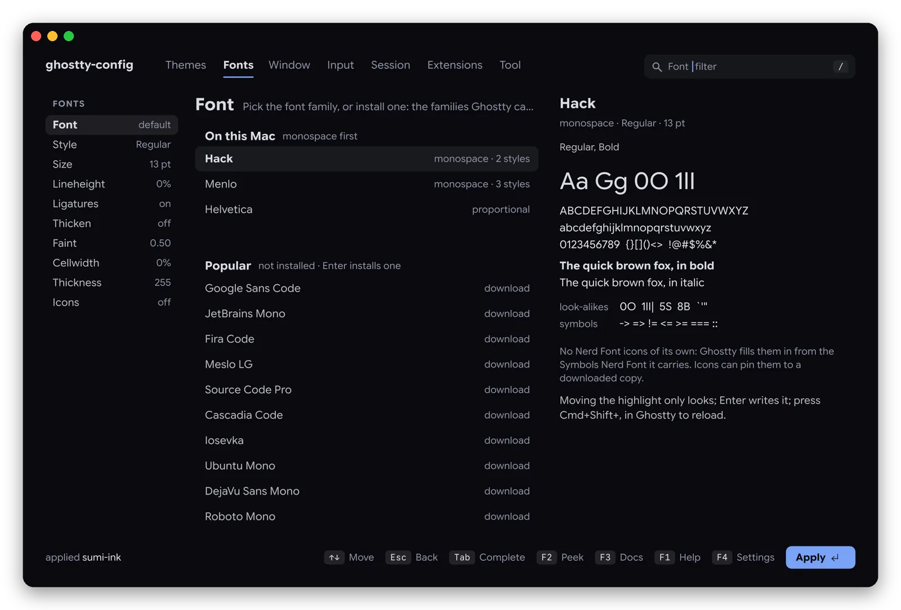

Fonts
A specimen set in the font itself
Family, style and size, spacing, ligatures, the OpenType features and variable axes the font really has. 70 monospace families download in one Enter; a missing or proportional font gets a suggestion.
